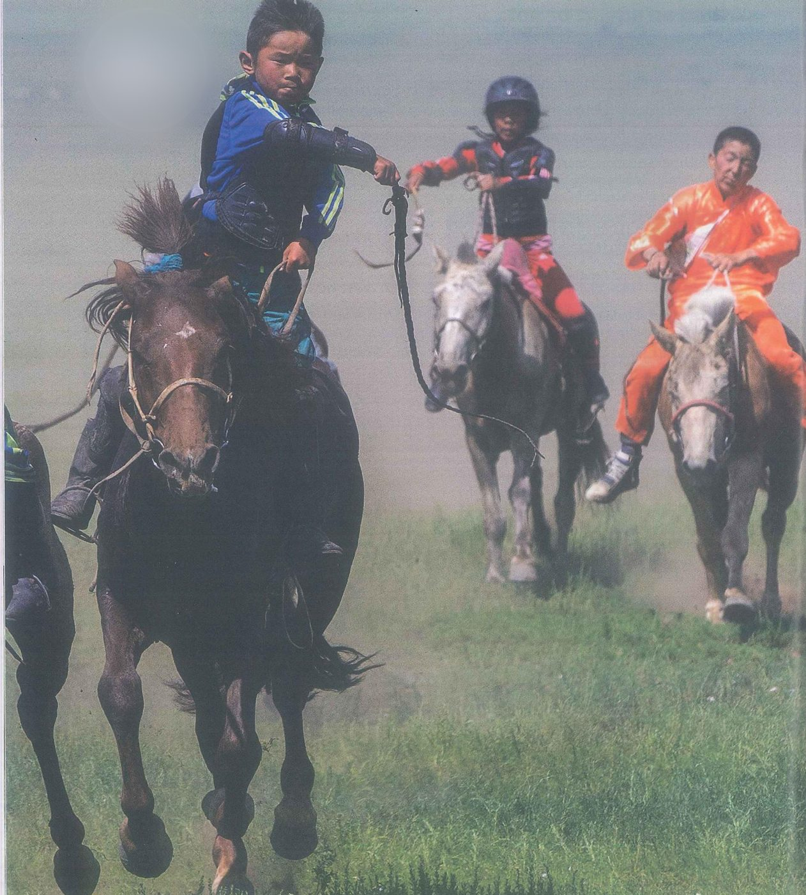
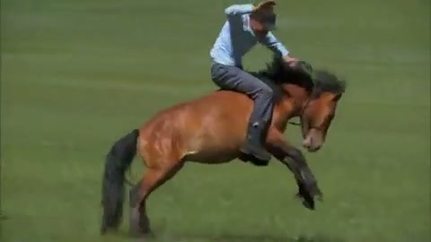
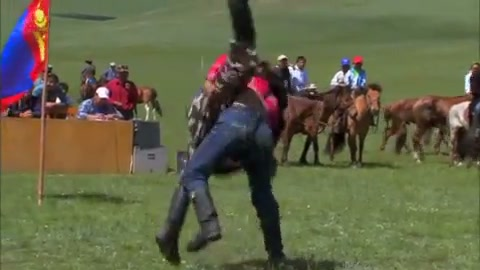
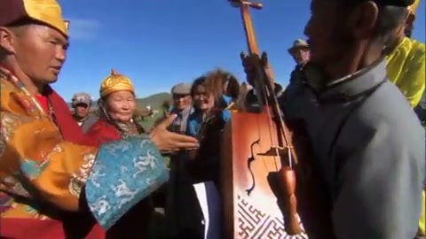

Aims and lead-in
Aims of the lesson
After these four periods (180 minutes), you will be able to:
Knowledge
- Name the words and chunks of the 4 groups: adverts and notices, checking your writing, festivals and traditions, racing and winning.
- Identify what makes an advert or notice effective: a strong headline, reasons to join, an offer, the key details and a picture.
- Explain how the horse race at the Naadam is organised, from the blessing of the horses to the prize-giving.
Skills
- Spot, name and fix mistakes with the 8 symbols of the correction code: Sp, MW, P, Prep, Gr, WO, C, WW.
- Use question and imperative headlines and on / at / every in a notice, and tell a race as it happens in the present simple and continuous.
- Compare adverts A–C with the advice box, and follow the race, the numbers and the people in Video 2.1 and the PET extras.
Skills · Attitude
- Write correct sentences for your own club advert, then upgrade two of them, level by level.
- Give and defend your view on adverts, traditions and rivals with the 7-step frame, in pairs and groups.
- Value checking your own writing before anyone reads it, and respect sporting traditions such as Mongolian horse racing.
Lead-in 1 · Keys, riders and a prize: look, guess and react
Cards 1–2 are the photos in SB 2e–2f (pp. 29 and 30); cards 3–6 are stills from Video 2.1, Mongolian horse racing.

- Question 1‘Look at the hands. Whose could they be, and how long has this person been playing, do you think?’
- Question 2‘In the book, this photo sits beside advice on writing adverts. What could an advert with this picture sell or offer?’
- Question 3‘Would a picture like this make you read the rest of the advert? Why or why not?’
Model answer
They look like an older man’s hands, a bit rough, so I’d guess he has played for most of his life. The picture could sell piano lessons for adults, or maybe a shop that repairs old pianos. It would catch my eye, but I’d only call if the advert gave a price and told me where the lessons were.

- Question 1‘Describe the riders: what is each one wearing, and who is in front?’
- Question 2‘Look at the face of the boy in blue. What is going through his mind right now?’
- Question 3‘Is horse racing a sport people follow in Vietnam? Where have you seen it or heard about it?’
Model answer
The boy at the front has a blue sports jacket with black pads on his arm, and the two behind him are in red and black and in bright orange. He looks totally focused, almost angry, as if nothing exists except the finishing line. We don’t have much horse racing in Vietnam; the one race I know about is in Bắc Hà, up in Lào Cai, where local riders race without a saddle.
- Question 1‘Describe the woman at the front: her hat, her clothes and the look on her face.’
- Question 2‘In the video, she blesses each horse before the race. Why do people want a blessing before a big day?’
- Question 3‘What do people in Vietnam do for luck before an exam or a competition?’
Model answer
She’s wearing a tall golden hat and a shiny golden robe, with a red patterned cloth over her shoulders, and she looks calm and serious. A race depends partly on luck, so a blessing helps the owners feel their horse is protected. Before my entrance exam, my mum took me to the Temple of Literature in Hà Nội to light incense and pray for good results.

- Question 1‘What is the horse doing, and how is the man trying to stay on its back?’
- Question 2‘If he falls off now, which parts of his body are most at risk?’
- Question 3‘Would you ever try to ride a horse like this? What would you need first?’
Model answer
The horse is jumping and kicking to throw him off, and he’s leaning forward with one hand on its neck. If he comes off, I’d worry about his head first and then his wrists, because people put a hand out to break a fall. I’d only try it with a helmet, soft ground and months of lessons, so realistically never.

- Question 1‘Who is winning at this moment, do you think? Look at their legs.’
- Question 2‘Where are the people who are watching, and what else can you see behind the wrestlers?’
- Question 3‘Which traditional games do people still play at festivals in your home town?’
Model answer
It’s hard to say, but one of them has a leg up in the air, so I think he’s about to be thrown. The crowd is sitting behind a long wooden barrier, and further back there are horses and a red and blue flag. In my village the spring festival still has tug of war, and people take turns on a tall bamboo swing.

- Question 1‘Which object is being held up high on the right? Guess what it is for.’
- Question 2‘Look at the faces. Whose horse do you think has won, and how do they feel?’
- Question 3‘What would be a good first prize for the winner of our academy sports day?’
Model answer
It’s a wooden instrument with a long neck, a bit like a violin, so I imagine someone plays it at the celebration. The man in the golden robe looks proud and the old woman behind him is beaming, so maybe their family’s horse came first. For our sports day I’d give the winner a weekend pass and decent running shoes, because you can’t train in a medal.
Lead-in 2 · Adverts, mistakes and races: agree or disagree?
1 · Online adverts are more annoying than useful.
Model answer
Mostly, yes. The ones that jump up in the middle of a lecture video drive me mad, especially when I’m revising at midnight. To be fair, I found my second-hand stethoscope through an advert in a student group, so they’re not all a waste of time.
2 · Most adverts promise more than they give.
Model answer
I’d say so. A fitness app I downloaded promised me a new body in thirty days, and a month later the only thing that had changed was my phone’s battery life. Small club notices tend to be more honest, because whoever writes them has to face you every week.
3 · You should check every message before you send it, even a short text.
Model answer
Yes, and in medicine more than anywhere. On our first hospital placement, a classmate texted the nurse about bed 12 when he meant bed 21, and it took ten nervous minutes to sort out. Reading a text again costs you five seconds.
4 · Traditional sports are more exciting to watch than modern ones.
Model answer
Not for me. Last Tết I watched a boat race on the river near my grandparents’ house, and it was fun for about ten minutes. A close football match, on the other hand, keeps me on the edge of my seat for ninety.
5 · Children should not ride in long, fast races.
Model answer
I’d agree, at least for the long ones. A fall at full gallop is dangerous for anybody, and a child’s bones are still growing, so one bad injury can affect the rest of their life. I respect the tradition, but I’d want every young rider in a helmet and a medical team along the course.
6 · A strong rival makes you a better competitor.
Model answer
Definitely. In our 3,000-metre fitness test, I only got under twelve minutes because Hùng stayed right on my shoulder the whole way. Without him, I’d have eased off somewhere around the halfway mark.
- I’d go along with that up to a point, because …
- In my experience, …
- It really depends on …
- I see it a bit differently: …
- You’ve got a point, but what about …?
Lead-in 3 · Good advert or bad advert?
SB p. 29 Ex 1 · What makes a good advert and a bad advert? Think of one advert you like and one you don’t (in a magazine, on TV or online). Note why, then compare with a partner.
Model answer
- One I like: a short TV advert for a brand of milk, with a cartoon cow and a song so catchy that my little sister still sings it. It’s funny, and you get the message in ten seconds.
- One I don’t like: a video advert that plays before every clip I open online and repeats the same line five times. It’s loud, it never changes, and I still couldn’t tell you what it sells.
Twelve features: does each one belong to a good advert or a bad advert?
- The one I like works because …
- It would work better with …
- What spoils it for me is …
Lead-in 4 · Brainstorm: your words and phrases for each of the four groups
What can you find on a club notice or a poster? List words for its parts and for the details it gives.
Which words do you know for the mistakes people make when they write, and for putting them right?
Think of a festival in your home town. Which words describe what happens there and who takes part?
Picture the last hundred metres of a race. Which words do you have for the people, the places and the result?